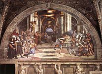

Raffael
Zum Vergrößern der Abbildung bitte auf das Bild klicken
1 
2 
3 
4 
5 
6 
7 
8 
9 
11 
12 
13 
15 
17 
18 
RAFFAEL SANZIO oder SANTI, genannt RAFFAEL
(Urbino 1483 - Rom 1520)

Einführung
Der Weg des Künstlers durch Mittelitalien rechtfertigt die traditionelle Einteilung seiner kurzen Laufbahn, deren Ruhm die Malerei war, in drei Abschnitte mit zunehmender Bedeutung: die Periode Marken und Umbrien (1500-1504), die florentinische Periode (1504-1508) und die römische Periode (nach 1508).
MARKEN UND UMBRIEN
In Urbino wurde Raffael bei seinem Vater, Giovanni Santi, in die Kunst eingeweiht, aber er lernte zweifellos noch mehr im Kontakt mit den feinen Kreisen des herzoglichen Hofes. Danach vollendete er seine Lehre in Perugia bei Perugino, der ihm einen Sinn für Fülle mitzugeben wusste, den er selbst von Piero della Francesca erhalten hatte. Die Werke Raffaels in dieser Periode – von etwa 1500 bis 1504 – reflektieren den Stil von Perugino, manchmal auch den Pinturicchios (1454-1513), wobei schon ein menschlicherer Akzent zu erahnen ist, und ein Sinn für Schlichtheit, der nicht im Gegensatz zur Feinheit der Ausführung steht. Das Retabel in der Kirche von San Francesco al Monte in Perugia (1502-1503, Vatikanische Pinakothek) macht die Krönung der Jungfrau (1) zum Sujet einer Komposition in zwei Etagen, in der die Variation der Haltungen und Gesichtsausdrücke von einer persönlichen Suche zeugt. Gemalt1504 für San Francesco de Città di Castello, nimmt die Vermählung der Jungfrau (2) (Pinakothek Brera, Mailand), mit mehr Anmut, die Darstellung der Raumgeometrie auf, die Perugino mit der Schlüsselübergabe in der Sixtinischen Kapelle gelungen war.
FLORENZ
Mit seiner Ankunft in Florenz 1504 – er sollte hier vier Jahre bleiben –, entdeckte der junge Meister aus der Provinz neue Horizonte. Die Tradition des Quattrocento und die gleichzeitige Anwesenheit Leonardo da Vincis konnten nicht ohne Einfluss auf ihn bleiben. Die monumentalen Kompositionen Frau Bartolomeos (1472 – 1517) trugen zu einer Erweiterung seines Erfahrungshorizontes bei. In seinen Arbeiten aus dieser Zeit spürt man diese verschiedenen Strömungen, aber die immer tiefere Menschlichkeit, die sie atmen, verdankt sich schon ganz einer persönlichen Sicht.
Die florentinische Kultur prägt einige kleine, gekonnt gearbeitete Bilder: Heiliger Michael, Heiliger Georg (Musée du Louvre); Heiliger Georg (National Gallery, Washington); das früher aus dem Traum des Ritters (National Gallery, London) und den Drei Grazien (3) (Musée Condé, Chantilly) gebildete Diptychon. Aber in Florenz widmete sich Raffael hauptsächlich Variationen des Madonnenthemas, dem er einen unnachahmlichen Akzent von Weiblichkeit und Zärtlichkeit verlieh. Manchmal mit dem Kind allein, ist die Jungfrau häufig von anderen Personen begleitet, oft auch in eine Landschaft der umbrischen Tradition, lichtvoll und heiter, versetzt. Die berühmtesten florentinischen Madonnen Raffaels sind die mit den Namen Großherzogliche Madonna (4) (Palazzo Pitti, Florenz) und Madonna des Hauses Orléans (Musée Condé), sowie die Jungfrau im Grünen (5) Kunsthistorisches Museum, Wien), deren pyramidenförmige Gruppe von der Heiligen Anna Leonardos inspiriert ist - wie die Madonna mit dem Stieglitz (6) (Galerie der Uffizien, Florenz) oder die Schönen Gärtnerin (Louvre). Dieses Thema steht auch im Zentrum ehrgeizigerer, aber klar artikulierter Kompositionen, die es zur "Heiligen Konversation" erweitern: Das Retabel "Colonna" (Metropolitan Museum, New York), das Retabel "Ansidei" (National Gallery, London), die Madonna mit dem Baldachin (Palais Pitti). Die Grablegung (7) (Galerie Borghese, Rom) ist das Hauptsujet des Retabels "Baglioni", 1507 für San Francesco in Perugia gemalt. Hier findet man ausnahmsweise einen angespannten Stil, mit einer von Michelangelo inspirierten Suche nach Plastizität. Der Ruhm der Dreifaltigkeit, ein in San Severo von Perugia gemaltes Fresko, hat dagegen eine friedvolle Weite, die den Triumph der Eucharistie ankündigt. Zur florentinischen Periode gehören schließlich schöne Porträts, in denen der Einfluss Leonardos deutlich ist: die Schwangere Frau (Palais Pitti), Agnolo Doni (8) und Maddalena Doni (Palais Pitti), vor einem Landschaftshintergrund, ebenso wie die Dame mit dem Einhorn (9) (Galerie Borghese).
ROM - DIE PÄPSTLICHEN AUFTRÄGE
1508 in Rom angekommen, sollte Raffael dort den günstigen Boden für die volle Entfaltung seines Genies finden. Erhoben und gereift durch die Offenbarung der Antike ebenso wie durch das Beispiel Bramantes und Michelangelos, erschien er bald als der Künstler mit der höchsten Fähigkeit, die großen Vorhaben der humanistischen Päpste der Renaissance in eine Sprache mit universeller Reichweite zu übersetzen. Und da war zunächst Julius II., der davon träumte, das kaiserliche Rom unter der spirituellen, weltlichen und kulturellen Herrschaft der Kirche wiedererstehen zu lassen.
Im Palais des Vatikans hatte eine Gruppe von Malern aus Siena und Umbrien mit der Ausgestaltung der über den Räumen Alexanders VI. Borgia gelegenen Wohnung begonnen. Von 1508 an entschied Julius II., sie durch Raffael zu ersetzen, den Bramante am päpstlichen Hof eingeführt hatte. Und so entstand, unter dem Namen Stanze oder "Zimmer" des Vatikans, der berühmteste Zyklus von Fresken des Künstler – großenteils in seinem Atelier geschaffen.
Das so genannte Zimmer "de la Signature" wurde von 1509 bis 1511 gemalt, fast vollständig von der Hand Raffaels. Dieses Ensemble, in dem seine Kunst ihr Gleichgewicht findet und einer besonders erhabenen Inspiration folgt, verleiht einem großen Projekt des Humanismus Gestalt, der Versöhnung der heidnischen Kultur und des christlichen Ideals. Neben den bereits von Sodoma (1477-1549) geschaffenen Grotesken zeigen die vier Medaillons des Gewölbes die allegorischen Figuren der Theologie, der Philosophie, der Poesie und der Justiz, auf die sich die Sujets der benachbarten Kassetten beziehen: Der Sündenfall, Die Astronomie, Apollo und Marsyas, Das Urteil Salomos. Das vierteilige Thema wird von den großen Rundbogenfresken der Wände aufgenommen, in denen die Allegorie lebendigen Darstellungen Platz macht. Als Illustration der Theologie, überwölbt der Triumph der Eucharistie (10) (berühmt geworden unter der wenig exakten Bezeichnung "Disput des heiligen Sakraments") in großartiger Weise eine irdische Sphäre, die der streitbaren Kirche (Gelehrte, Päpste und Gläubige), und eine himmlische Sphäre (Propheten, Apostel und Heilige), in einem gekrümmten oder ganz auf die zentrale Monstranz ausgerichteten Raum. Die Philosophie wird von der Athener Schule gefeiert, deren Gestalten von Philosophen und Gelehrten den majestätischen Raum eines von Bramante inspirierten Tempels bevölkern. Für die Poesie ist es die nicht weniger klare Komposition des Parnasses, auf dem die antiken und modernen Dichter mit Apollo und den Musen erscheinen. Für die Justiz schließlich zwei Szenen: Gregor IX. empfängt die Dekretalien und Tribonian übergibt Justinian die Pandekten, getrennt durch ein Fenster - und darüber eine allegorische Darstellung der Tugenden.
Ausgemalt von 1511 bis 1514, zeigt sich im so genannten "Zimmer des Heliodor" eine Weiterentwicklung des Vorherigen. Weniger ideal, mehr historisch, auch mit Anspielungen auf die päpstliche Politik, ist das Thema der Wände - die Gewölbemedaillons enthalten vier Episoden des Alten Testaments - das des göttlichen Wirkens zugunsten der Kirche. Andererseits hat sich das Spektrum der malerischen Mittel erweitert: mit der Szene des Heliodor, der aus dem Tempel vertrieben wird (11) (beachtenswert die bedeutungsvolle Präsenz Julius’ II), tritt nun die Bewegung ins Spiel; mit der Auslieferung des Heiligen Petrus das Helldunkel in einer nächtlichen Fassung; mit der Messe von Bolsena der Realismus, wovon die Porträts der Würdenträger des päpstlichen Hofes und die Farben zeugen, die nun, zweifellos unter dem venezianischen Einfluss, großzügiger verwendet werden ; mit der Begegnung zwischen dem Heiligen Leon und Attila (Leon X erscheint unter den Zügen des Heiligen) eine neue Kompositionsformel, durch ungleiche Massen.
Schon in Heliodors Zimmer ist Raffaels Hilfe spürbar, doch im so genannten "Zimmer des Brands in Borgo", das von 1514 bis 1527 für Leon X gemäß eines Themas, wo Geschichte und Aktualität noch mehr Platz einnehmen, gemalt wurde, ist der Anteil Raffaels bedeutend Die vier Hauptszenen bringen die Päpste mit Namen Leon ins Geschehen. Die Szene, die dem Zimmer seinen Namen gibt, - Leon IV bringt in ihr den Brand in Borgo mit einem Kreuzzeichen (12) zum Stillstand - ist mit ihrer in die Tiefe gehenden Komposition, ihrer archäologischen Begeisterung, und der plastischen Qualität ihrer einzelnen Teile, die offensichtlich teilweise von Raffael gemacht wurden, bemerkenswert.
Im so genannten "Konstantinsaal" stammt nur die Konzeption des Ganzen vom Meister; Die Ausführung ist gänzlich seinen Schülern zu verdanken, zum Beispiel Jules Romain. Ihm wird das wilde, grandiose Fresco der Schlacht an der Milviusbrücke (oder Kontantins Sieg über Maxence) zugeschrieben.
Leon X hatte zweifellos 1514 bei Raffael ein anderes wichtiges Werk bestellt: die Kartons von 10 Tapisserien der Taten der Apostel für die Sixtinische Kapelle. Das Original des Wandteppichs, der in Brüssel gewebt wurde, ist in der Pinakothek des Vatikans ausgestellt. Vier der Kartons überleben (Victoria and Albert Museum, London): diese großen Kompositionen, insbesondere der wundersame Fischfang, der von Raffaels Hand stammt, sind wegen ihrer klassischen Einfachheit und der Effizienz einer Inszenierung, die den Figuren die wesentliche Rolle gibt, bedeutend.
Von 1518 an bis zu seinem Tod leitete Raffael schließlich die Arbeiten an den "Logen" des Vatikans. Eine Galerie mit drei Jochen, deren feine, prunkvolle Verzierung, ausgeführt von Giovanni da Udine (14887-1564), gemalte Grotesken und modellierten Stuck vereint, zugleich kleinen Freskenkompositionen Platz lässt, vier an der Zahl pro Joch, die in knapper, lebendiger Weise die Hauptepisoden des Alten Testaments illustrieren. Diese berühmte "Bibel" ist die Erfindung des Meisters, bekannt sind mehrere Zeichnungen, die sich darauf beziehen, doch die Ausführung stammt von Jules Romain, Polidoro da Caravaggio (1500-1546), Perin del Vaga (um 1501-1547), Giovanfrancesco Penni (1488 – um 1530), usw.
ROM - Andere Arbeiten
Die Arbeiten im Vatikan füllten die ungeheure Aktivität Raffaels nicht aus, so schmückte er auch mehrere römische Bauwerke mit Fresken. Jenes, das Jesaja zwischen zwei Putti in der Kirche des Heiligen Augustinus (1511) darstellt, erinnert aus der Nähe betrachtet an Michelangelos Propheten. Die Aufträge des Bankiers Agostino Chigi verdienen besondere Aufmerksamkeit. Im Erdgeschoß seiner Villa, später "la Famesina" genannt, malte Raffael 1511 den Triumph der Galathea (13), eine geschmeidige, von feinem Humanismus geprägte Komposition. Wieder ist es Michelangelos Sinn für das Plastische, das die vier Sybillen, die Engel und die Putti inspirierte, die aus einem Bogen von Santa Maria della Pace (1514) ragen. In der Kapelle Chigi in Santa Maria del Popolo – die Architektur stammt von Raffael – gibt es Mosaike, die nach seinen Zeichnungen (1516) ausgeführt wurden. 1517 wurde der Meister schließlich beauftragt, die Loggia der Villa Chigi mit Fresken zu schmücken. Nicht die Ausführung, aber die sehr originelle Idee stammt von ihm, wie es von schönen Zeichnungen bezeugt wird. Der Saal ahmt eine Pergola mit Blumen -und Fruchtgewinden nach; Die Fabel der Psyche nimmt die Mitte des Gewölbes und seiner zehn Anfänger ein.
In einem reiferen und oft schwereren Stil setzt die Folge der römischen Madonnen die der florentinischen Periode fort. Die Madonna des Fürsten Alba (14) (National Gallery, Washington) ist ein Tondo, wie die berühmte Jungfrau mit dem Stuhl (Palazzo Pitti). Die Madonna mit dem Diadem (Louvre) bleibt kleinformatig, während eine umfangreichere Komposition die Madonna von Foligno (Pinakothek des Vatikan), die Madonna mit dem Fisch (Prado, Madrid) und die Madonna des Heiligen Sixtus (15) (Gemäldegalerie, Dresden) zeigt; letztere, aus San Sisto de Plaisance, ist in ihrer Entsagung die mystischste. Weitere religiöse Bilder stammen aus der römischen Periode: die Vision des Ezechiel (Palazzo Pitti), trotz kleinem Format von monumentaler Wirkung; die Heilige Cäcilie (Pinakothek von Bologna) mit seinem Stillleben mit Musikinstrumenten; und zuletzt die berühmte Verwandlung (16) (Pinakothek des Vatikans) auf zwei Ebenen, der untere Teil verrät die Arbeit von Schülern.
Die erdrückende Arbeit Raffaels hindert ihn nicht daran, in Rom einige Porträts zu malen, deren Raffiniertheit ihrer Einfachheit gleichkommen: der Kardinal (Prado, Madrid), Baldassare Castiglione (17) (Louvre), Fedra Inghirami (Palazzo Pitti), la Donna velata (Palazzo Pitti), der Mutmaßliche Bindo Altoviti (National Gallery, Washington), Leon X mit zwei Kardinälen (18) (Uffizien).
Raffaels Universum
Was allem voran das Werk des Meisters seine drei Perioden hindurch verrät und was am besten seinen anhaltenden Erfolg erklärt, ist seine wunderbare Fähigkeit, erhabene Konzepte in eine natürliche, allen zugängliche Sprache zu übersetzen, in eine Formenwelt, die ein zutiefst menschlicher Atem durchströmt. Das Beispiel der Madonnen ist schon bezeichnend. Ob man die glückliche Mutterschaft (die Schöne Gärtnerin, die Jungfrau mit dem Stuhl) hervorhebt, oder den Ernst der Aufgabe (Madonna des Heiligen Sixtus); immer findet man das lebendige Bild einer Weiblichkeit wieder, die subtil Grazie und Noblesse vereint. Aber die großen römischen Zyklen erlaubten Raffael, seinen Einfallsreichtum umfassender unter Beweis zu stellen. Freilich kann man ihn schwerlich für eine programmatische Einheit ehren wie im Zimmer der Signatur, wo neoplatonisch der Humanismus widerhallt. Das päpstliche Denken hatte hier auch seinen Anteil, doch Raffaels Interpretation lässt uns alles, was gesagt werden wollte, verstehen. Die Berufung des Künstlers war es nicht, allegorische Figuren zu skizzieren – sind sie auch präsent, um das Thema festzulegen -, sondern vielmehr deren Bedeutung in Szenen, in denen jede ein Abenteuer des menschlichen Geistes erzählt, zu entwickeln. Die Komposition spielt natürlich eine entscheidende Rolle. Sie drückt für sich genommen und in der Ausgewogenheit ihrer Gesamtheit, dem finalen Gleichgewicht der Kräfte, die sie ins Spiel bringt, dem Platz, den sie jedem Ding zuweist, aber auch in der Geschmeidigkeit ihrer bestimmenden Linien die Idee einer geistigen Ordnung aus. Sie atmet im Rhythmus eines Raumes, den die Perspektive vergrößert, wo die Figuren weniger durch sich selbst als durch ihre Anordnung Bedeutung bekommen. All das sind die Zeichen eines klassischen Temperaments, doch das Genie Raffael ist umfassend genug um auch anscheinend gegensätzliche Tendenzen zuzulassen. Das Zimmer des Heliodor bringt dafür der Beweis: Raffaels Interesse an der Bewegung, das sich dort manifestiert, dem nächtlichen Licht, anders gesagt, am Zufälligen, und diese individuelle Wahrheit, die die herrlichen, mit so viel Verstandesschärfe gemalten Porträts in Florenz oder Rom ausdrücken.
Raffaels Hand
Von einem ziemlich verbreiteten Irrtum, nämlich zu glauben, der Verdienst Raffaels liege in der Konzeption und vielleicht in der Komposition, aber kaum in der Ausführung, sollte Abstand genommen werden, auch davon, ihn, wie Bernard Berenson es wollte, auf einen genialen "Illustrator" zu reduzieren. Raffael ist auch ein sehr großer Maler. Richtig ist, dass ihn eine Art Scham fast immer dazu brachte, seine Fähigkeiten und seine Wissenschaft hinter einer einfachen, ja harmlosen Erscheinung zu verbergen. Richtig ist auch, dass er die Rolle des Meisters über die Arbeiten innehatte, dass der Umfang seiner Aufgabe ihn oft dazu zwang, die Ausführung seiner Aufträge seinen Schülern oder Mitarbeitern anzuvertrauen, so dass es schließlich schwierig ist, den genauen Bedeutungsgrad seines Dazutuns festzulegen. Mittlerweile wird übereinstimmend eine gewisse Anzahl an Werken, deren Qualität dem Betrachter offensichtlich ist, als von seiner Hand eingeordnet. Qualität der Zeichnung, was im Übrigen durch die zahlreichen Studien in großen Sammlungen des Meisters weltweit belegt ist. In ihr kann man ganze Sensibilität der Konturen, die aus einem Kurvenspiel entstehen, genießen. Qualität der Farbe, die im Allgemeinen diskret und der Form dienend ist, manchmal voller, wie es die Messe von Bolsena (19) zeigt. Qualität des Strichs, leicht, vibrierend in den besten Fällen, doch von einer Virtuosität, die sich nicht auf drängt.
Der Maler und seine Nachkommen
Die Kupferstiche des Marcantonio Raimondi (1480-1534), Zeitgenosse Raffaels, haben zur Popularität seines Werks beigetragen. Die Verbreitung des Stils geschah dank seiner zahlreichen Hilfen und Schüler, unter denen Jules Romain als der bei weitem persönlichste erscheint. Doch es stimmt, dass ihr Gebrauch der Sprache des Meisters häufig zu Manierismen geführt hat. Raffaels legitimer Erbe wäre eher ein französischer Maler des 17.Jh.: Le Sueur.
Lange Zeit, und nicht ohne Übertreibung, wurde das Werk Raffaels als eine Art Manifest des Klassizismus angesehen. Vielleicht ist das der Hauptgrund für die Geringschätzung, die es seit Mitte des vorigen Jahrhunderts oft erfährt, insbesondere ausgedrückt in der Auflehnung der Präraphaeliten. Noch zu unseren Zeiten eignen sich Raffaels Qualitäten nicht für Geschmäcker, die eher auf der Suche nach dem Unerwarteten und Unvollendeten sind. Doch ein aufmerksamer Blick erlaubt es, unter dem Mantel der Einfachheit das, was die Jugend und Erhabenheit seiner Botschaft ausmacht, wahrzunehmen.
Raffael als Architekt
Raffaels architektonisches Werk verdient einen Platz unter den Bauwerken im Geiste der klassischen Renaissance. Der wesentliche Teil befindet sich in Rom. Die Kirche Sant Eligio degli Orefeci entstand um 1513. 1514 wurde Raffael, als Nachfolger von Bramante, Direktor der Arbeiten an der Vatikanischen Basilika; er begeisterte sich für den Plan, das griechische Kreuz gegen das lateinische einzutauschen, der aber nicht ausgeführt wurde. Im Gegenzug ließ er sich von Bramantes Plan für die Peterskirche inspirieren und baute um 1515 in Santa Maria del Popolo die Kapelle Chigi. Bemerkenswert ist wegen ihres Stuckgewölbes die Loggia der Villa Madama, gebaut um 1516.

© 2006 Umanista.Net